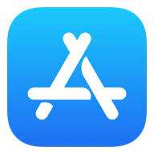
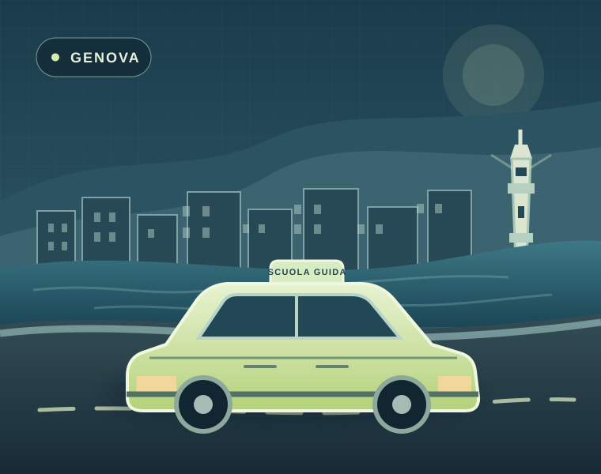
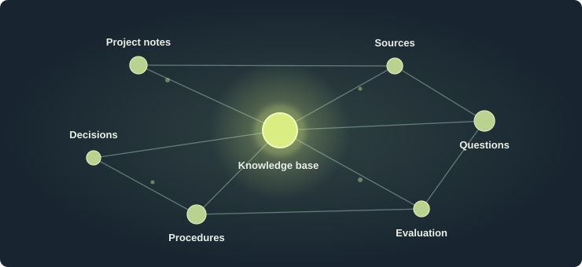

Native macOS app
Built for internal company use.
Desktop · native macOSFULL-STACK · AWS · macOS · MOBILE
I'm Filippo Agosti, a full-stack developer at ESTRO TECHNOLOGIES. I build business applications and AI integrations on AWS, and have developed apps for macOS and mobile.
01 / EXPERIENCE
At ESTRO TECHNOLOGIES, I've built complete management and CRM applications and AI integrations independently. My work spans frontend, backend and AWS components, including RDS, Cognito and Lambda.
Our team's work includes systems that answer questions using database information and AI agents that research public information to enrich CRM data. These examples are described at a general level; client and project details remain private.
02 / DESKTOP & MOBILE
Applications developed at ESTRO TECHNOLOGIES. Product details remain confidential.
Built for internal company use.
Desktop · native macOS
App Store Google Play
Google PlayDeveloped for external customers and published on the Apple App Store and Google Play.
Product details confidential03 / SELECTED PROJECTS
A complete private platform alongside public applications and an ongoing experiment.

I designed and built a driving school platform from the ground up, using AI coding agents throughout development. It connects online enrollment with the daily work of the secretary's office, students and instructors.
The application includes invitations and role-based access, private document review, medical appointments, theory progress, driving lesson scheduling and on-site payment records. Supabase provides authentication, PostgreSQL and private file storage.
Application developed · production setup and rollout pending · source private
A browser-based workspace for fantasy football auctions: player tiers, target prices, budgets and competing team rosters. Personal auction data stays in the browser.
 Public MVP · evolving
Public MVP · evolvingAn independent race comparison tool for completed Formula 1 Grands Prix from 2023 onward. Compare two drivers through results, lap position, pace, tyre stints and pit stops. The interface flags gaps in historical OpenF1 data.
Its public MVP is live; I am continuing to improve the analysis, coverage and interface.

A personal knowledge workflow using Obsidian notes, AnythingLLM and a local model in LM Studio. Early tests retrieved answers with source references; document syncing is still under evaluation.
Demo and repeatable evaluation in progress
04 / ABOUT
I'm interested in the whole path from a user need to a functioning application: understanding the problem, shaping the data and backend, then making the result clear in the interface.
Outside work, I experiment with local language models, retrieval from personal notes and the Model Context Protocol. I prefer to show what a project actually does, how it was built and what I still need to test.
See my GitHub profile